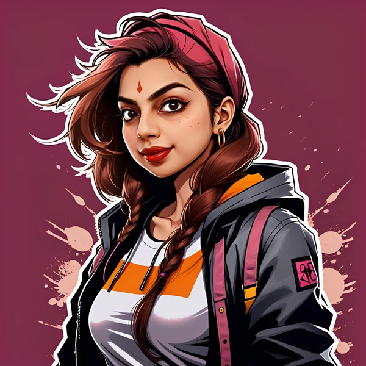
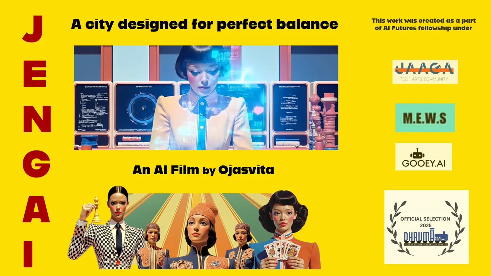
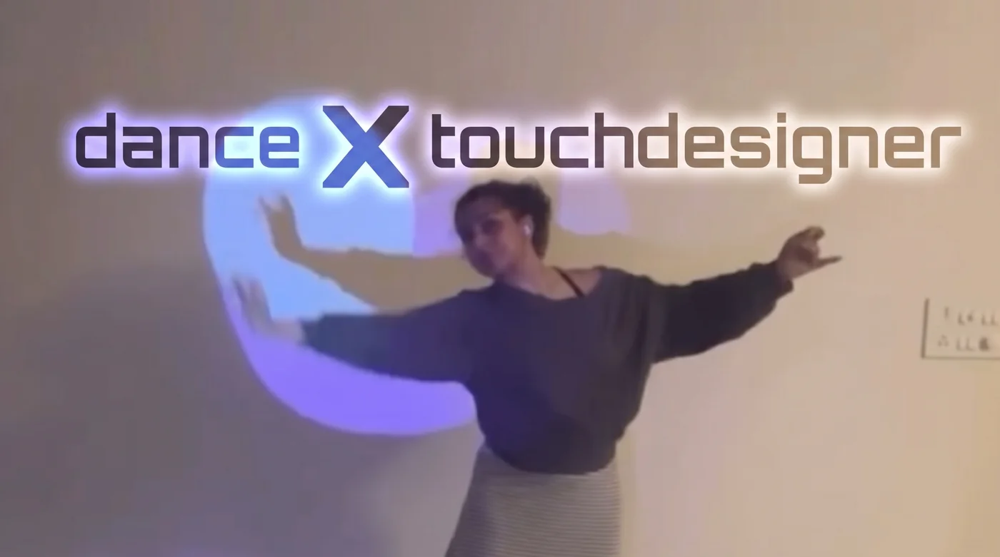
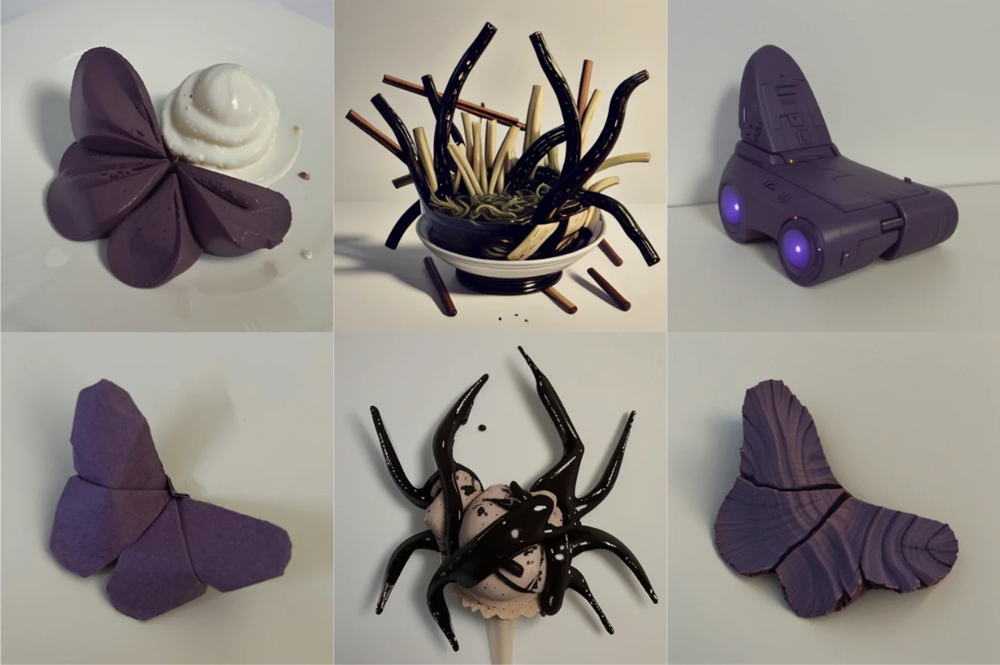
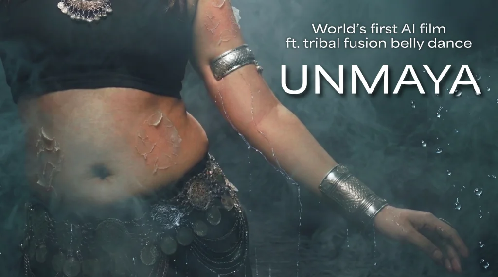

Machine Learning Engineer
↗Creative Technologist
↗Dancer
↗
Ojasvita Walgad
click to know about meMachine Learning Engineer
Computer Vision • LLM/VLMs • Multimodal AIUnmayaverse: In-Video Search
- Tri-Modal Retrieval Architecture: Engineered a multimodal in-video search system that retrieves scene and keyframe images by fusing visual, dialogue, and acoustic signals.
- Fine-Tuned Embeddings & Fusion: Fused rankings from cinematography-fine-tuned SigLIP (LoRA), BGE dense text embeddings, and CLAP audio embeddings using Weighted Reciprocal Rank Fusion (RRF), reaching 0.54 MRR and 68% Recall@5 on a golden evaluation benchmark.
Generative AI Engineer
- VLM Model Adaptation: Owned model-adaptation effort for recognizing handwritten math equations and texts from mobile phone captures, where off-the-shelf Texify VLM trained on digital documents failed on real-world handwriting; scoped problem, curated dataset, and built the fine-tuning and inference pipeline.
- Multi-GPU LoRA Pipeline: Built a multi-GPU LoRA fine-tuning pipeline on a curated 10k-sample handwritten dataset (multi-line formulas, algorithms) with synthetic noise augmentation (elastic distortion, motion blur) and contrast-enhancement inference step, achieving a 46.7% reduction in character edit distance and more than doubling BLEU (0.21 → 0.44) over the digital-document baseline.
Sr. Deep Learning Engineer
- Production Edge Deployment: Owned model delivery for on-edge retail analytics pipelines: took models from training through TensorRT optimization to production-readiness, meeting real-time accuracy and latency requirements on edge hardware for a deployment spanning 700 US commercial stores.
- BPBReID Multi-Camera Tracking: Developed a body-part-based Re-ID model (BPBReID) for multi-camera person tracking: trained with body-part pseudo-labels from a pretrained teacher parsing model on a retail dataset, implementing visibility-aware part-matching score for consistent person tracking across cameras despite occlusion and viewpoint changes (+30.88 cross-camera Re-ID mAP, +25% tracker F1).
- Lightweight RefineNet Multi-Task: Developed a multi-task network predicting monocular depth and in-store scene segmentation (people, counters, shelves, products, POS) in a single pass; delivered as an FP16 TensorRT model at ~40 ms/frame with ~2.8× fewer FLOPs and ~1.7× fewer parameters than depth-only BTS baseline, powering 3D localization for cashier analytics.
- Tracking & Sensor Fusion: Built a Kalman-filter vehicle tracker, a lens rectification model correcting barrel/pincushion distortion, and CLAHE contrast enhancement for night-time detection on outdoor store cameras, giving stable vehicle tracks that enabled fuel-pump and parking metrics.
Beyond Origami (AI × Origami)
- Interactive Image-to-Image Pipeline: Built an interactive web application on Hugging Face Spaces with an image-to-image pipeline powered by Stable Diffusion 1.5 (+LoRA).
- Real-Time LCM Sampling: Optimized inference using 2-step LCM sampling (512 × 512) and hyperparameters tuned for creative generation with strict fold-structure preservation.
IIT Madras • Dual Degree Research
- Dual Degree (BTech + MTech): BTech in Electrical Engineering & MTech in Applied Mechanics from the prestigious Indian Institute of Technology Madras (IIT Madras).
- Continental Automotive AI: Collaborative research project with Continental simulating human visual search patterns in road video localization using attention-based Deep Reinforcement Learning and computer vision.
Software Developer R&D
- 5G Core Telecom Infrastructure: Engineered high-throughput 5G telecom core infrastructure modules, protocol stack optimization, and low-latency system debugging in C++ for next-generation telecommunication networks.
Creative Technologist

PROJECT 01: JengAI;2050
Set in 2050, JengAI is an AI-driven smart city designed for perfect balance, where urban life shifts like Jenga blocks and every move is calculated to sustain harmony. But when its order begins to collapse, its creator Mia must decide her next move. Created under AI Futures Fellowship (Gooey.AI × Jaaga Trust) and awarded Best AI Film at Dhruma Film Festival 2025.

PROJECT 03: Shake your Atoms
Inspired by the three physical states of water: “ice, liquid, and gas”. Shake Your Atoms is an interactive visual piece that lets users disturb a digital atomic structure through hand gestures, exploring how physical movement can influence digital matter.

PROJECT 04: Beyond Origami
In Beyond Origami, a simple action like folding paper becomes a way to explore the digital world. Users upload pictures of physical origami, prompt, and re-imagine folds through generative neural diffusion pipelines.

Unmaya: AI × TFBD
‘Unmaya - A woman, a dance and her body in between’ is an AI short film that delves into an Indian woman's body image and mental health as she indulges in tribal fusion belly dance, a movement form she has come to love.
Hide Else, AI Seeks
An interactive hide-and-seek installation where visitors playfully test ways to outsmart and evade AI detection. Built using Pygame, computer vision, and physical sensor systems for Param Science Experience Center.
Dancer
Kathak Senior Diploma
Certified Kathak dancer training under the formal Prayag Sangeet Samiti curriculum (Senior Diploma, equivalent to bachelor's degree level). Active stage performer across solo and group cultural showcases.
Dance × TouchDesigner
Elton John dance cover movement-reactive spotlight using TouchDesigner exploring phygital performance.